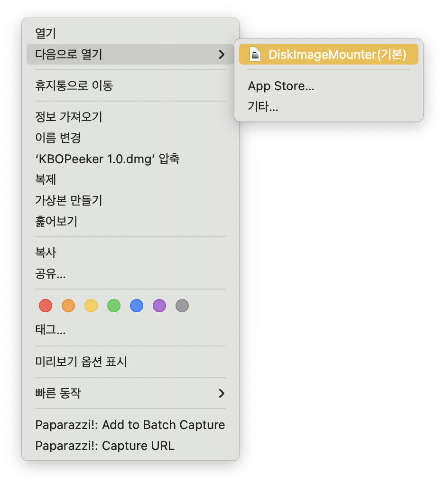

KBOPeeker란?
KBOPeeker는 KBO 리그 실시간 경기 상황을 추적하여 macOS 메뉴바에
표시해주는 앱입니다.
별도 창 없이 메뉴바에서 타자별 상황, 점수,
이닝 정보를 실시간으로 확인할 수 있습니다.
설치 및 사용 방법
- 위 다운로드 버튼을 클릭해 KBOPeeker.dmg 파일을 받습니다.
-
다운로드한 파일을 마우스 오른쪽 클릭하여
"다음으로 열기 > DiskImageMounter(기본)"을 선택해 열어주세요.

- KBOPeeker 아이콘을 Applications 폴더로 드래그해 설치합니다.
- 설치 후 Launchpad나 Spotlight에서 "KBOPeeker"를 검색해 실행하세요.
-
처음 실행 시 보안 경고가 뜨면,
Finder에서 '응용 프로그램' 폴더로 이동해 KBOPeeker 아이콘을 마우스 오른쪽 클릭한 뒤
"열기"를 선택해 실행해주세요.
로그인 시 자동 실행 설정 방법
KBOPeeker는 macOS 로그인 시 자동으로 실행되도록 설정할 수 있습니다.
이 기능을 사용하면 Mac을 켤 때마다 KBOPeeker를 따로 실행하지 않아도
됩니다.
- 메인 화면 하단의 설정 버튼으로 설정 창을 엽니다.
- 설정 창 하단의 "로그인 시 자동 실행 설정" 버튼을 클릭합니다.
-
macOS의 시스템 설정이 열리면, + 버튼을 클릭한 뒤
'응용 프로그램' 폴더에서 KBOPeeker를 선택하여 추가합니다. -
목록에 KBOPeeker가 추가되면 설정이 완료됩니다.
이제 Mac을 켤 때 자동으로 KBOPeeker가 실행됩니다.
배포 일지
v1.0.0 - 2025.04.07
첫 공식 릴리스입니다.